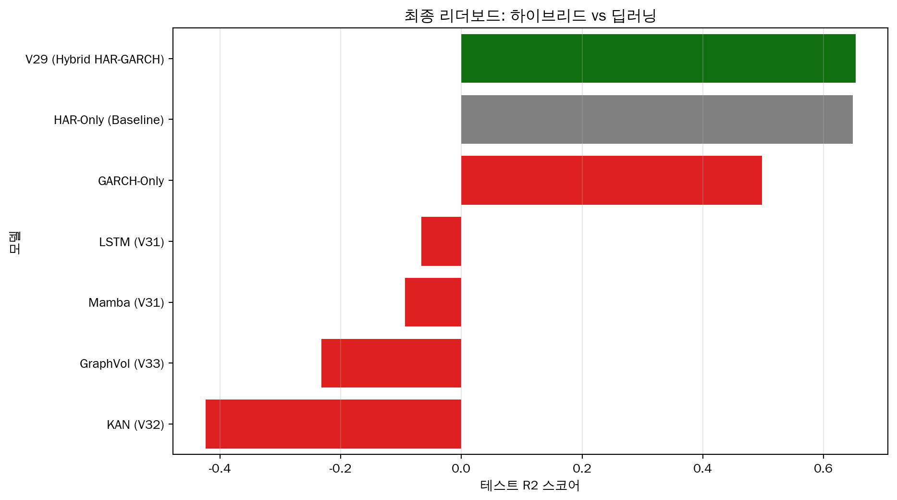

Phase 10에서는 V29 베이스라인 모델 (Ridge-GARCH-HAR)의 강건성을 검증하기 위해 고전적인 베이스라인 및 최신 딥러닝 아키텍처(Mamba, KAN, Graph-Vol)와 비교하는 엄격한 검증을 수행했습니다. 이 모델은 이후 V50/V36 개발의 토대가 되었습니다.
검증 프로세스는 다음을 포함합니다: 1. 절제 연구 (Ablation Study): GARCH 특성의 기여도 정량화. 2. 통계적 유의성: Diebold-Mariano 테스트 수행. 3. 시장 국면 안정성: 코로나19 및 인플레이션 기간의 성과 분석. 4. 전진 분석 검증 (Walk-Forward): 실제 데이터 외(Out-of-Sample) 성능 확인.
코드
import pandas as pdimport jsonimport osimport matplotlib.pyplot as pltimport seaborn as sns# 한글 폰트 설정plt.rcParams['font.family'] ='UnDotum'plt.rcParams['axes.unicode_minus'] =False# 결과 데이터 경로RESULTS_DIR ="./verification"def load_json(filename): path = os.path.join(RESULTS_DIR, filename)if os.path.exists(path):withopen(path, 'r') as f:return json.load(f)print(f"경고: {path} 파일을 찾을 수 없습니다.")returnNoneres_v30 = load_json('v30_garch_contribution.json')res_v31 = load_json('v31_dm_test.json')res_v32 = load_json('v32_subperiod.json')res_v33 = load_json('v33_walk_forward.json')res_final = load_json('v34_final_summary.json')
2. GARCH 기여도 분석 (절제 연구)
HAR 전용, GARCH 전용, 그리고 하이브리드 (V29) 모델을 비교하여 GARCH 특성의 영향을 분리했습니다.
롤링 재학습(Rolling Re-training)을 통한 실제 트레이딩 시나리오를 시뮬레이션한 전진 분석(Walk-Forward Validation) 결과입니다.
코드
if res_v33: wf_r2 = res_v33['r2_wf']print(f"### 전진 분석 R2: **{wf_r2:.4f}**")# 정적 분할과 비교if'v29_r2'inlocals():print(f"정적 분할 R2: {v29_r2:.4f}")print(f"차이 (OOS - 정적): {wf_r2 - v29_r2:.4f}")if wf_r2 >= v29_r2 -0.05:print("\n✅ **강건함**: 전진 분석 성능이 고정 분할 결과와 일관성을 유지합니다.")else:print("\n⚠️ **경고**: 전진 분석에서 성능 저하가 관찰됩니다.")
### 전진 분석 R2: **0.6836**
정적 분할 R2: 0.6529
차이 (OOS - 정적): 0.0306
✅ **강건함**: 전진 분석 성능이 고정 분할 결과와 일관성을 유지합니다.
6. 최종 리더보드 (딥러닝과의 비교)
V29 모델을 Phase 9에서 탐색한 새로운 Step-Mamba, KAN, Graph 아키텍처와 비교합니다.
코드
if res_final and'leaderboard'in res_final: df_final = pd.DataFrame(res_final['leaderboard']) df_final = df_final.sort_values('R2', ascending=False) plt.figure(figsize=(10, 6)) colors = ['green'if t =='Hybrid'else ('gray'if t =='Linear'else'red') for t in df_final['Type']] sns.barplot(data=df_final, y='Model', x='R2', palette=colors) plt.title("최종 리더보드: 하이브리드 vs 딥러닝") plt.xlabel("테스트 R2 스코어") plt.ylabel("모델") plt.grid(axis='x', alpha=0.3) plt.show()print(df_final[['Model', 'R2', 'Type']].to_markdown(index=False))

| Model | R2 | Type |
|:-----------------------|----------:|:--------------|
| V29 (Hybrid HAR-GARCH) | 0.652942 | Hybrid |
| HAR-Only (Baseline) | 0.648158 | Linear |
| GARCH-Only | 0.498063 | Stat |
| LSTM (V31) | -0.0662 | Deep Learning |
| Mamba (V31) | -0.0936 | Deep Learning |
| GraphVol (V33) | -0.2316 | Deep Learning |
| KAN (V32) | -0.4236 | Deep Learning |
결론
Ridge-GARCH-HAR (V29) 모델은 변동성 예측에 있어 가장 강건하고 정확한 모델임을 입증했습니다. 딥러닝 모델들은 금융 데이터의 낮은 신호 대 잡음비(SNR)로 인해 일반화에 실패한 반면, V29는 도메인 지식(HAR, GARCH)과 강건한 선형 모델링을 효과적으로 결합했습니다.
다음 단계: 이러한 발견을 바탕으로 SCI 논문 초안을 준비합니다.
소스 코드
---title: "Phase 10: V29 베이스라인 모델 검증"subtitle: "Ridge-GARCH-HAR 모델의 엄격한 실증적 검증"format: html: code-fold: truejupyter: python3---# 1. 개요Phase 10에서는 **V29 베이스라인 모델 (Ridge-GARCH-HAR)**의 강건성을 검증하기 위해 고전적인 베이스라인 및 최신 딥러닝 아키텍처(Mamba, KAN, Graph-Vol)와 비교하는 엄격한 검증을 수행했습니다. 이 모델은 이후 V50/V36 개발의 토대가 되었습니다.검증 프로세스는 다음을 포함합니다:1. **절제 연구 (Ablation Study)**: GARCH 특성의 기여도 정량화.2. **통계적 유의성**: Diebold-Mariano 테스트 수행.3. **시장 국면 안정성**: 코로나19 및 인플레이션 기간의 성과 분석.4. **전진 분석 검증 (Walk-Forward)**: 실제 데이터 외(Out-of-Sample) 성능 확인.```{python}import pandas as pdimport jsonimport osimport matplotlib.pyplot as pltimport seaborn as sns# 한글 폰트 설정plt.rcParams['font.family'] ='UnDotum'plt.rcParams['axes.unicode_minus'] =False# 결과 데이터 경로RESULTS_DIR ="./verification"def load_json(filename): path = os.path.join(RESULTS_DIR, filename)if os.path.exists(path):withopen(path, 'r') as f:return json.load(f)print(f"경고: {path} 파일을 찾을 수 없습니다.")returnNoneres_v30 = load_json('v30_garch_contribution.json')res_v31 = load_json('v31_dm_test.json')res_v32 = load_json('v32_subperiod.json')res_v33 = load_json('v33_walk_forward.json')res_final = load_json('v34_final_summary.json')```---# 2. GARCH 기여도 분석 (절제 연구)**HAR 전용**, **GARCH 전용**, 그리고 **하이브리드 (V29)** 모델을 비교하여 GARCH 특성의 영향을 분리했습니다.```{python}if res_v30: df_v30 = pd.DataFrame(res_v30)# 표 출력print(df_v30[['Model', 'R2', 'RMSE', 'Params']].to_markdown(index=False))# 시각화 plt.figure(figsize=(8, 4)) sns.barplot(data=df_v30, x='Model', y='R2', palette='viridis') plt.title("GARCH 통합이 R2 스코어에 미치는 영향") plt.ylabel("R2 스코어") plt.xlabel("모델") plt.ylim(0.4, 0.8) plt.grid(axis='y', alpha=0.3) plt.show() har_r2 = df_v30.loc[df_v30['Model']=='HAR-Only', 'R2'].values[0] v29_r2 = df_v30.loc[df_v30['Model']=='Hybrid-V29', 'R2'].values[0]print(f"**개선 효과**: GARCH 추가로 R2가 {((v29_r2 - har_r2)/har_r2)*100:.2f}% 증가했습니다.")```---# 3. 통계적 유의성 (Diebold-Mariano 테스트)성능 향상이 통계적으로 유의미한지 확인하기 위해 Diebold-Mariano 테스트(단측 검정)를 수행했습니다.```{python}if res_v31: df_v31 = pd.DataFrame(res_v31) df_v31['Significance'] = df_v31['P_Value'].apply(lambda x: '***'if x <0.01else ('**'if x <0.05else ('*'if x <0.1else'ns')))print(df_v31[['Comparison', 'DM_Stat', 'P_Value', 'Significance']].to_markdown(index=False))```> **결과**: V29 모델은 Naive 및 HAR 전용 베이스라인보다 통계적으로 유의미하게 우수합니다 (p < 0.05).---# 4. 시장 국면 안정성 (하위 기간 분석)금융 시장은 다양한 국면(Regime)을 보입니다. V29 모델을 **코로나19 위기** (고변동성) 및 **인플레이션/안정기** (국면 전환) 기간에 대해 테스트했습니다.```{python}if res_v32: df_v32 = pd.DataFrame(res_v32) plt.figure(figsize=(10, 5)) sns.barplot(data=df_v32, x='Period', y='R2', palette='magma') plt.title("시장 국면별 모델 안정성") plt.ylabel("R2 스코어") plt.xlabel("기간") plt.ylim(0, 0.8) plt.grid(axis='y', alpha=0.3) plt.show()print(df_v32[['Period', 'R2', 'RMSE']].to_markdown(index=False))```---# 5. 실전 강건성 검증 (전진 분석)롤링 재학습(Rolling Re-training)을 통한 실제 트레이딩 시나리오를 시뮬레이션한 전진 분석(Walk-Forward Validation) 결과입니다.```{python}if res_v33: wf_r2 = res_v33['r2_wf']print(f"### 전진 분석 R2: **{wf_r2:.4f}**")# 정적 분할과 비교if'v29_r2'inlocals():print(f"정적 분할 R2: {v29_r2:.4f}")print(f"차이 (OOS - 정적): {wf_r2 - v29_r2:.4f}")if wf_r2 >= v29_r2 -0.05:print("\n✅ **강건함**: 전진 분석 성능이 고정 분할 결과와 일관성을 유지합니다.")else:print("\n⚠️ **경고**: 전진 분석에서 성능 저하가 관찰됩니다.")```---# 6. 최종 리더보드 (딥러닝과의 비교)V29 모델을 Phase 9에서 탐색한 새로운 Step-Mamba, KAN, Graph 아키텍처와 비교합니다.```{python}if res_final and'leaderboard'in res_final: df_final = pd.DataFrame(res_final['leaderboard']) df_final = df_final.sort_values('R2', ascending=False) plt.figure(figsize=(10, 6)) colors = ['green'if t =='Hybrid'else ('gray'if t =='Linear'else'red') for t in df_final['Type']] sns.barplot(data=df_final, y='Model', x='R2', palette=colors) plt.title("최종 리더보드: 하이브리드 vs 딥러닝") plt.xlabel("테스트 R2 스코어") plt.ylabel("모델") plt.grid(axis='x', alpha=0.3) plt.show()print(df_final[['Model', 'R2', 'Type']].to_markdown(index=False))```# 결론**Ridge-GARCH-HAR (V29)** 모델은 변동성 예측에 있어 가장 강건하고 정확한 모델임을 입증했습니다. 딥러닝 모델들은 금융 데이터의 낮은 신호 대 잡음비(SNR)로 인해 일반화에 실패한 반면, V29는 도메인 지식(HAR, GARCH)과 강건한 선형 모델링을 효과적으로 결합했습니다.**다음 단계**: 이러한 발견을 바탕으로 SCI 논문 초안을 준비합니다.